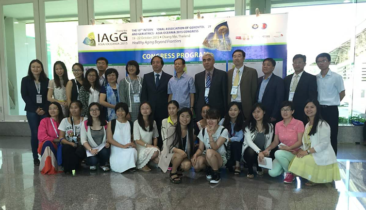
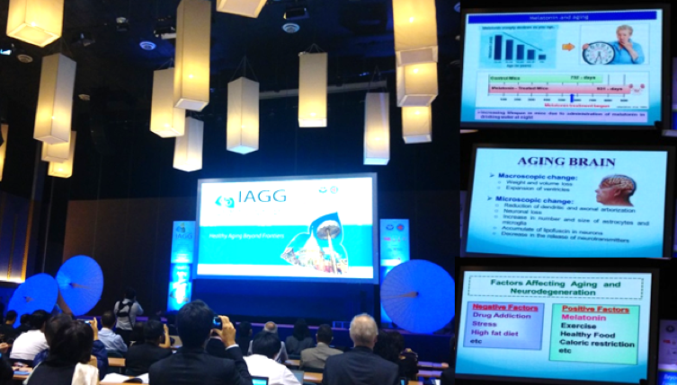
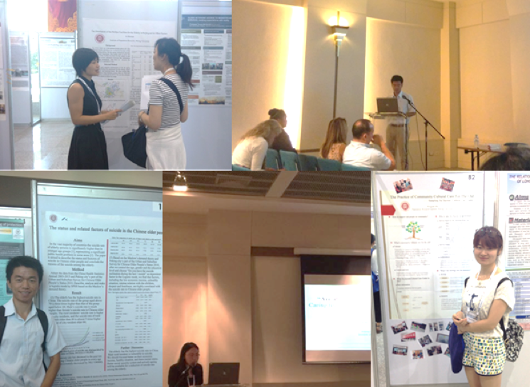

学生参加“2015年第10届IAGG亚洲及大洋洲地区老年学与老年医学大会”
2015年10月19日-10月22日，北京大学人口研究所2014级博士研究生程昭雯和江海霞、2015级博士研究生黄国桂和温煦，2013级硕士研究生陈洁茹、2014级硕士研究生程云飞、纳菡、海鸿雁、石暘和李会肖以及2015级硕士研究生叶徐婧子共11人，赴泰国清迈参加于清迈国际交流中心举行的“2015年第10届IAGG亚洲及大洋洲地区老年学与老年医学大会”。

本次大会由世界老年学与老年医学大会（IAGG）主办、联合国际医院协作中心组织，共有来自亚洲、太平洋地区的超过500名专家学者参加，分别就老年人健康、人口老龄化与老年医学发展、老年综合征、老年医学教育、老年人功能预防和维护以及老年化对经济的影响等问题进行了深入探讨和广泛交流。

大会设KEYNOTE大会报告、特邀专家演讲、分论坛口头展示和海报展示环节，共有7次大会报告主旨演讲、9次特邀专家演讲、321次口头展示和451张海报展出，对于亚洲和大洋洲地区近年来在老年学、老年医学方面的研究成果进行了集中展示。

参加此次大会的人口所学生进行了积极的学术交流和分享，分别就老年人虐待、老年人养老保健、养老机构地理分布、老年人睡眠影响因素、老年人跌倒和老年人居住状况等方面进行了研究成果的展示，包括了大会口头展示和海报展示。